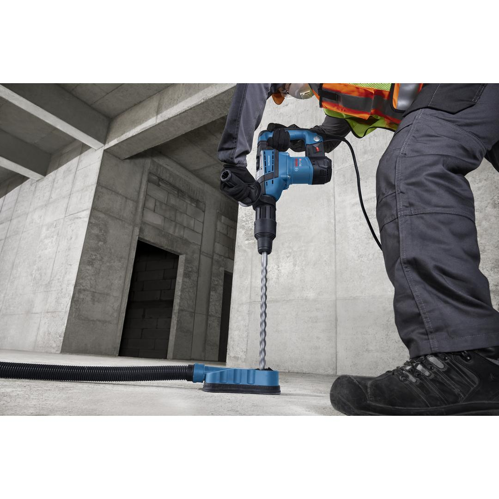
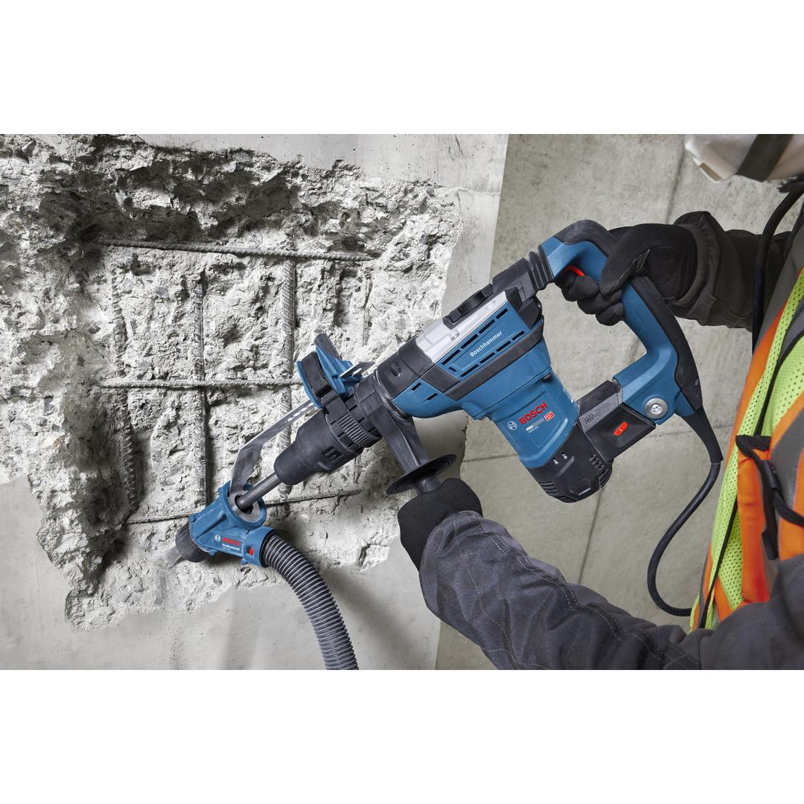
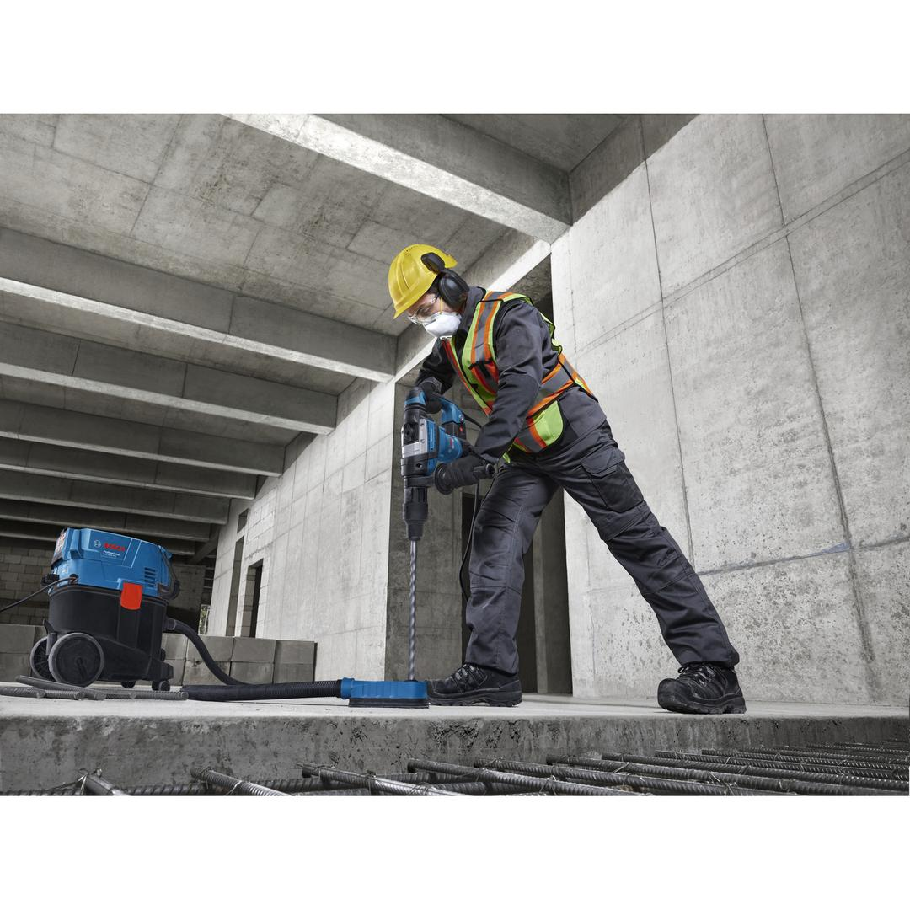
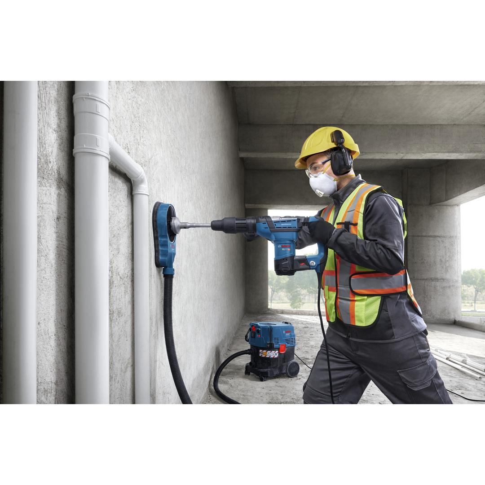
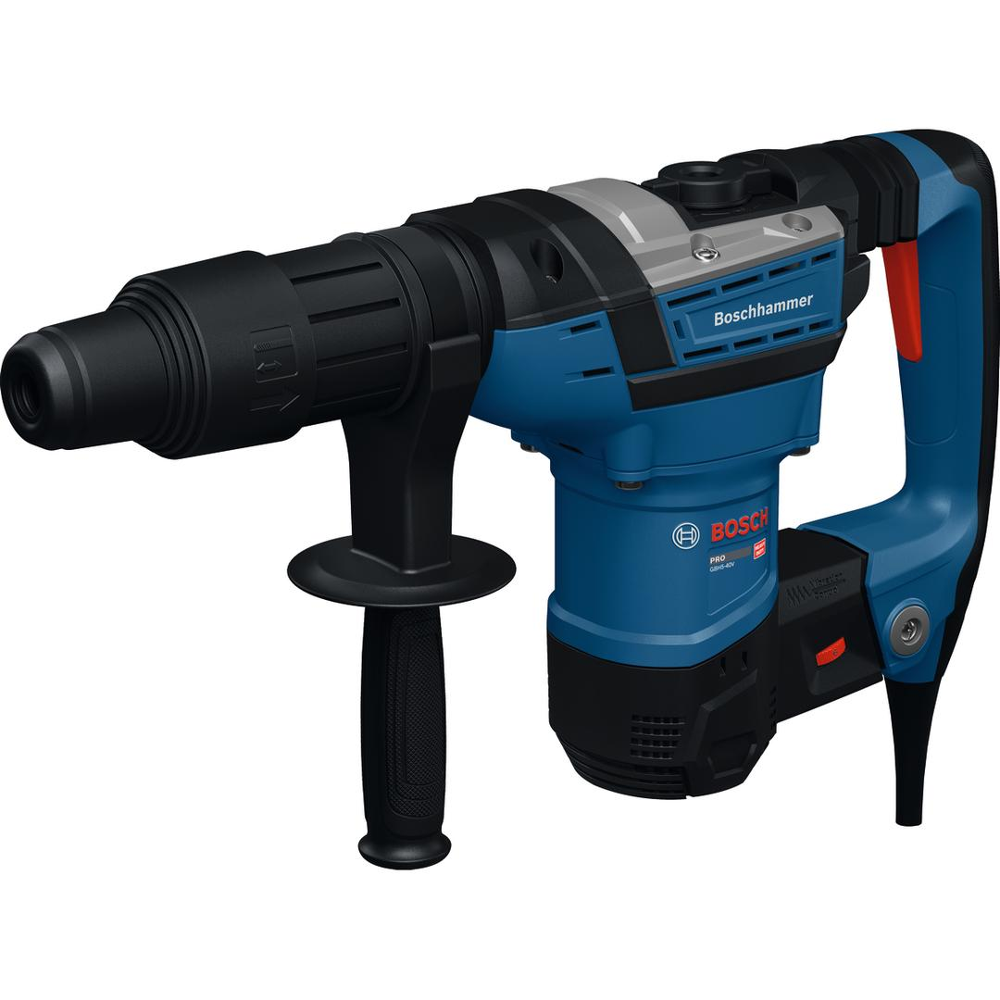
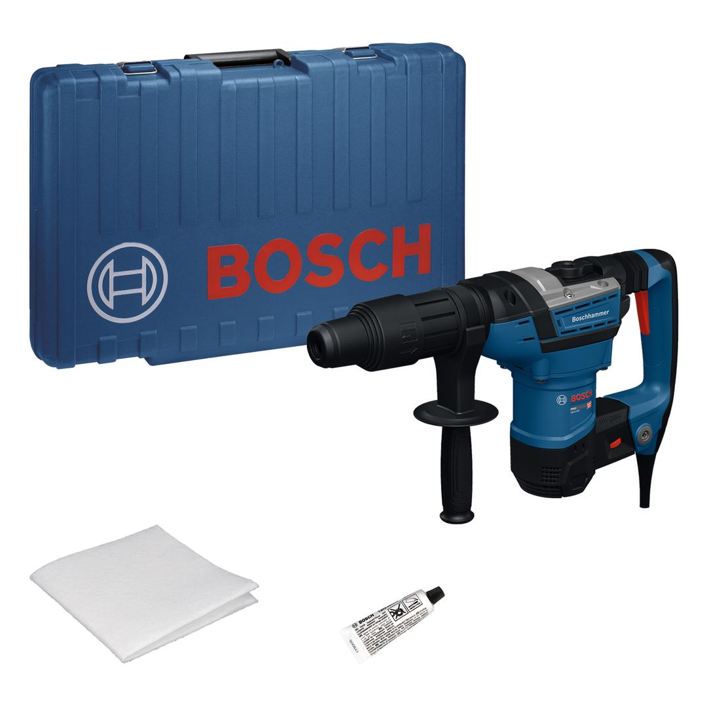

06112790K0






| Noise level |
The A-rated noise level of the power tool is typically as follows: Sound pressure level 97 dB(A); Sound power level 105 dB(A). Uncertainty K= 3 dB. |
| Voltage, electrical |
230 V |
| Rated input power |
1,100 W |
| Impact energy |
8.5 J |
| Weight |
6.900 kg |
| Tool dimensions (width) |
107 mm |
| Tool dimensions (length) |
498 mm |
| Tool dimensions (height) |
267 mm |
| Tool holder |
SDS max |
| Drilling dia. concrete, hammer drill bits |
14 – 40 mm |
| Opt. appl. range concrete, hammer drill bits |
16 – 28 mm |
| Drilling diameter in concrete with core cutters |
90 mm |
The New Hammer Drilling Specialist: Legendary Performance with the Comfort You Need
Professionals know that working with a rotary hammer all day is not easy on the body: constant vibration, kickback, and arm strain make long hours uncomfortable and raise the risk of injury. That’s why you need a tool that works as hard as you do: the PRO GBH5-40V rotary hammer delivers versatile power and performance you can always rely on during heavy-duty tasks while also taking care of your protection. Its 1100 W motor and optimized impact mechanism deliver 8.5 J of impact energy right where you need it, making this tool the most powerful in its class. Whether drilling or chiseling, you can handle the toughest materials with confidence. Your protection matters, which is why the Rotation Control Clutch prevents dangerous kickback and the vibration control handle minimizes strain, allowing you to work longer with less fatigue. Built to last, its dustproof construction—including a protective cap, fan, and impact housing—ensures durability even in the harshest environments. For maximum efficiency, the vario-lock function lets you quickly adjust chisel positions, minimizing downtime and keeping your workflow uninterrupted.
The PRO GBH5-40V is your tool of choice mainly for hammer drilling (16–40 mm), hole cutting (40–90 mm), and chiseling—whether you’re working on concrete, tile, or masonry.